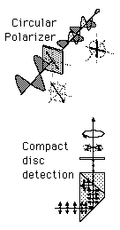

Quarter-Wave PlateA quarter-wave plate consists of a carefully adjusted thickness of a birefringent material such that the light associated with the larger index of refraction is retarded by 90° in phase (a quarter wavelength) with respect to that associated with the smaller index. The material is cut so that the optic axis is parallel to the front and back plates of the plate. Any linearly polarized light which strikes the plate will be divided into two components with different indices of refraction. One of the useful applications of this device is to convert linearly polarized light to circularly polarized light and vice versa. This is done by adjusting the plane of the incident light so that it makes 45° angle with the optic axis. This gives equal amplitude o- and e-waves. When the o-wave is slower, as in calcite, the o-wave will fall behind by 90° in phase, producing circularly polarized light.
|
Index Polarization concepts Reference Hecht Sec. 8.4 | |
| HyperPhysics***** Light and Vision | Go Back |
Quarter-Wave Plate Applications |
Index Polarization concepts |
| HyperPhysics***** Light and Vision | Go Back |
Linear to Circular Polarization
|
Index Polarization concepts | ||
| HyperPhysics***** Light and Vision | Go Back |